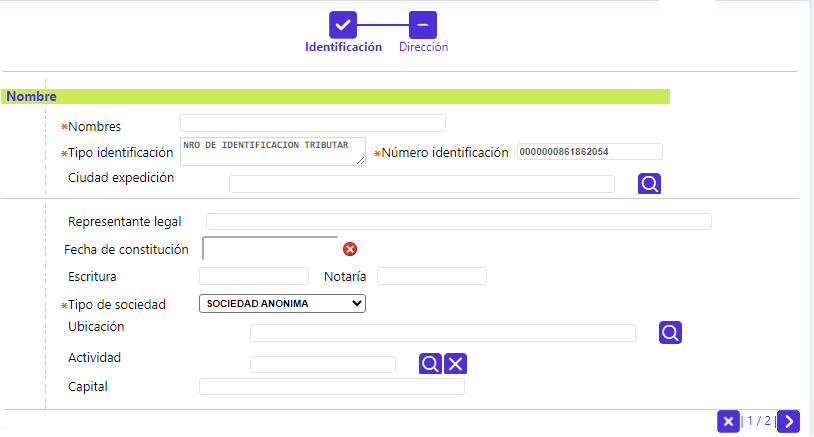

Ingreso clientes
Mediante este formulario, se ingresan los datos de Tipo y número de identificación de la persona natural o jurídica, para el que se pretende ingresar manualmente, la información que del mismo se disponga.
Inicialmente, el sistema muestra el siguiente formulario:

Tipo identificación |
En este campo que ofrece una lista de valores tipo combo, se debe seleccionar la clase de documento de identificación que posee el cliente sobre el cual se está efectuando la captura. |
Número identificación |
Campo obligatorio, que en máximo 16 caracteres, se debe digitar el número de identificación asociado al tipo de documento del cliente, sobre el cual se está efectuando la captura. Si el cliente ya existe en la base de datos, no permite avanzar y le notifica al usuario tal evento. |
Luego de ingresar tipo y número de identificación y oprimir el botón Buscar, si el cliente no existe en la base de datos, el sistema muestra el formulario correspondiente a un wizard de dos pasos, con los siguientes campos:

Nombres |
Dupla de campos, el primero obligatorio, en el que en máximo 60 caracteres, se debe ingresar el primer nombre de la persona natural o la razón social para persona jurídica. Para el segundo nombre de persona natural se dispone de 25 caracteres únicamente. |
Apellidos |
Dupla de campos, el primero obligatorio, que en máximo 20 caracteres, cada uno, dentro del(os) cual(es) se registra el(os) apellido(s) de la persona natural. |
Tipo identificación |
Campo obligatorio, no editable, en el que se muestra el tipo de identificación del cliente con el que se está ingresando a esta funcionalidad. |
Número identificación |
Campo obligatorio, no editable, en el que se muestra el número del documento de identificación del cliente con el que se está ingresando a esta funcionalidad. |
Ciudad expedición |
Campo no obligatorio, que permite seleccionar de la lista de valores poblada en información geopolítica, el lugar de expedición del documento de identificación del cliente. |
Fecha expedición |
Campo no obligatorio, en el que, mediante la funcionalidad de un calendario, se registra la fecha de expedición del documento de identificación del cliente. |
Sexo |
Campo obligatorio, en el que mediante una lista de valores tipo combo, se debe seleccionar entre Femenino o Masculino, el género del cliente. |
Estado civil |
Campo no obligatorio, en el que mediante una lista de valores tipo combo, de la cual seleccionar la opción que define el estado civil actual del cliente. |
Lugar nacimiento |
Campo no obligatorio, que permite seleccionar de la lista de valores poblada en información geopolítica, el lugar de nacimiento del cliente. |
Fecha nacimiento |
Campo no obligatorio, en el que, mediante la funcionalidad de un calendario, permite registrar la fecha de nacimiento del cliente. |
| Profesión |
Este campo no obligatorio, permite seleccionar de una lista de valores la profesión indicada por el cliente. |
Actividad Economica |
Campo no obligatorio que permite seleccionar de una lista de valores la actividad económica o código CIIU específico señalado por el cliente. |
| Personas a cargo |
En este campo numérico de 2 dígitos, no obligatorio, se registra el número de personas que dependen económicamente del cliente. |
Empleo independiente |
Campo no obligatorio, en el que mediante una lista de Si o No, se registra si el cliente depende de un empleo o no. |
Estrato |
Campo numérico de 1 posición, no obligatorio, que permite capturar la información correspondiente a la estratificación social a la cual pertenece el cliente. |
Cuando el usuario oprime el botón siguiente, el sistema realiza las validaciones correspondientes y avanza al paso dos del wizard, el cual tiene los siguientes campos:

Dirección |
Campo obligatorio, dentro del cual se debe registrar la nomenclatura del inmueble reportado por el cliente como el principal. |
| Teléfono 1 |
Campo numérico no obligatorio, que permite registrar el número telefónico del lugar de residencia notificado por el cliente. |
| Extensión 1 |
Campo numérico no obligatorio, que permite registrar, si aplica, el número de la extensión telefónica del lugar de residencia notificado por el cliente. |
| Teléfono 2 |
Campo numérico no obligatorio, que permite registrar el número telefónico del lugar de trabajo reportado por el cliente. |
| Extensión 2 |
Campo numérico no obligatorio, que permite registrar, si aplica, el número de la extensión telefónica del lugar de trabajo notificado por el cliente. |
Fax |
Campo numérico no obligatorio, que permite registrar el número al que puede enviarse, por este medio, comunicaciones al cliente. |
Celular |
Campo numérico no obligatorio, que permite registrar el número del teléfono celular del cliente. |
| Tipo |
Campo obligatorio, que provee lista de valores tipo combo, de la que debe seleccionarse la clase de dirección a la que corresponde la indicada por el cliente. |
| Ubicación | Campo obligatorio del que, debe seleccionarse de la lista de valores poblada en información geopolítica, el lugar (municipio) en el cual se encuentra localizado el inmueble reportado por el cliente como de residencia y/o laboral. |
| Zona postal | Si aplica, corresponde a un campo no obligatorio que puede seleccionarse de la lista de valores poblada en información geopolítica, el ZIP relacionado con la zona en la que se encuentra localizado el inmueble reportado por el cliente como de residencia y/o laboral. |
Cuando el usuario oprime el último botón en la parte inferior derecha, el sistema realiza las validaciones correspondientes y si no hay inconsistencias, avanza y despliega un nuevo formulario con los mismos datos ingresados:

Persona Juridica: Si el cliente es una empresa u otro tipo de organización, además de algunos datos comunes, se deben diligenciar otros puntuales como se indica:

| Nombres |
Campo obligatorio, en el que en máximo 60 caracteres, se debe ingresar la razón social de la empresa u organización. |
| Tipo Identificación | Campo obligatorio, no editable, en el que se muestra el tipo de identificación del cliente con el que se está ingresando a esta funcionalidad. |
| Número Identificación | Campo obligatorio, no editable, en el que se muestra el número del documento de identificación del cliente con el que se está ingresando a esta funcionalidad. |
Ciudad expedición |
Campo no obligatorio, que permite seleccionar de la lista de valores poblada en información geopolítica, el lugar de expedición del documento de identificación del cliente. |
| Representante Legal | Campo alfanumérico, no obligatorio, permite registrar en máximo 60 caracteres, el nombre de la persona que hace las veces de representante legal de la sociedad. |
| Fecha de Constitución | Campo no obligatorio que ofrece la funcionalidad de un calendario, y permite definir, en formato AAAA-MM-DD, la fecha de oficialización de la creación de la sociedad. |
| Escritura | Campo alfanumérico, no obligatorio, permite registrar en máximo 10 caracteres, el número de la escritura pública, mediante la cual se constituyó la sociedad. |
| Notaria | Campo alfanumérico, no obligatorio, permite registrar en máximo 10 caracteres, el número la notaría ante la cual se elevó la escritura pública de constitución de la sociedad. |
| Tipo de Sociedad | Campo no obligatorio que posee lista de valores tipo combo, de la que es posible seleccionar el tipo de sociedad comercial bajo el cual se encuentra constituido el cliente persona jurídica. |
| Ubicación | Campo no obligatorio del que, debe seleccionarse de la lista de valores poblada en información geopolítica, el lugar (municipio) en el cual se encuentra localizado el inmueble reportado por el cliente como de residencia y/o laboral. |
Actividad |
Campo no obligatorio que permite seleccionar de una lista de valores poblada a través de opción actividad económica actividad principal desarrollada por la sociedad, de acuerdo con su objeto social. |
Capital |
Campo no obligatorio, que en máximo 15 dígitos, permite indicar el monto del capital social indicado por la sociedad. |
Los datos del segundo paso del wizard son muy similares a los descritos para una persona natural, obviamente, en esta ocasión, relacionados con la sociedad o empresa.